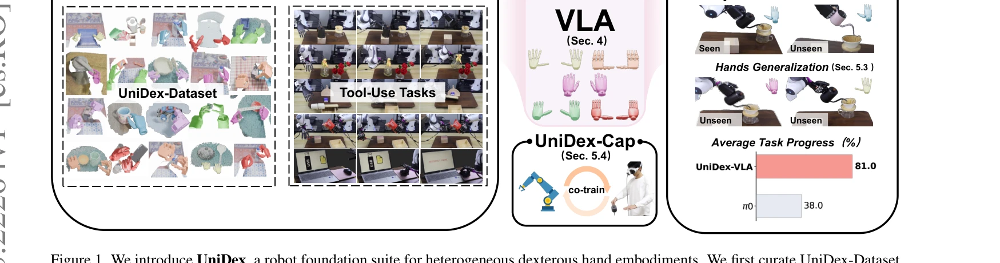
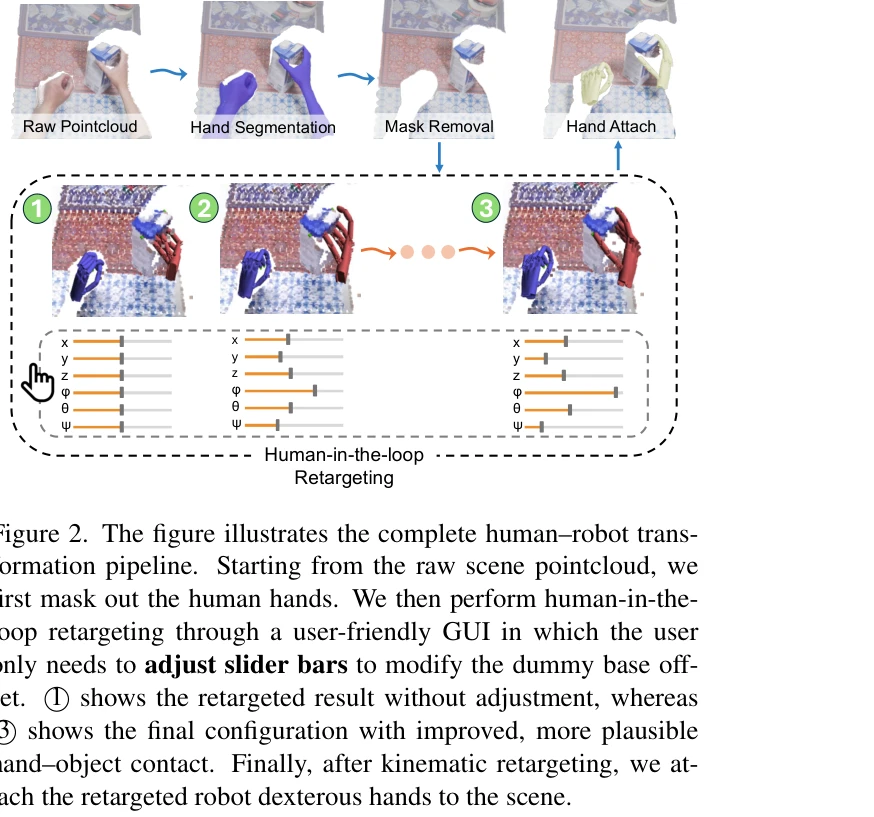

저자: Gu Zhang, Qicheng Xu, Haozhe Zhang, Jianhan Ma, Long He, Yiming Bao, Zeyu Ping, Zhecheng Yuan, Chenhao Lu, Chengbo Yuan, Tianhai Liang, Xiaoyu Tian, Maanping Shao, Feihong Zhang, Mingyu Ding, Yang Gao, Hao Zhao, Hang Zhao, Huazhe Xu | 날짜: 2026-03-23 | URL: https://arxiv.org/abs/2603.22264

Figure 1. We introduce UniDex, a robot foundation suite for heterogeneous dexterous hand embodiments. We first curate Un
인간 자기중심 비디오에서 50K+ 궤적을 수집한 UniDex-Dataset과 Function–Actuator–Aligned Space (FAAS) 통합 액션 공간을 활용하여 8종 로봇 핸드에 대한 범용 손재주 제어가 가능한 VLA 파운데이션 모델을 제시한다.
Figure 1. We introduce UniDex, a robot foundation suite for heterogeneous dexterous hand embodiments. We first curate Un

Figure 2. The figure illustrates the complete human–robot trans-
총평: UniDex는 손재주 로봇 조작 분야의 파운데이션 모델 구축을 위해 필요한 대규모 통합 데이터셋, 혁신적 액션 공간, 실용적 co-training 파이프라인을 체계적으로 제시한 종합적 연구로, 높은 실제 성능과 함께 cross-hand generalization 능력을 입증하여 이 분야의 실질적 발전을 견인할 것으로 기대된다.